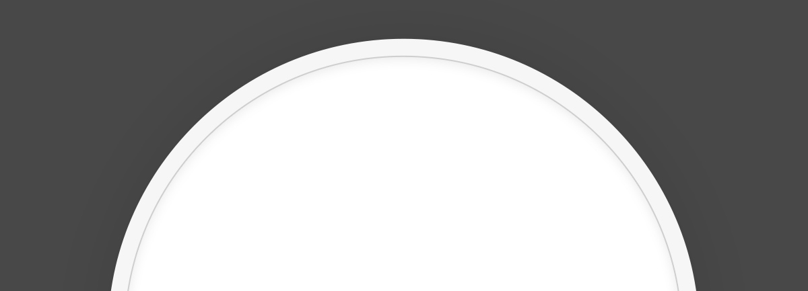
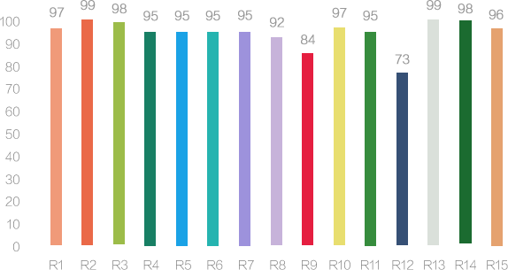
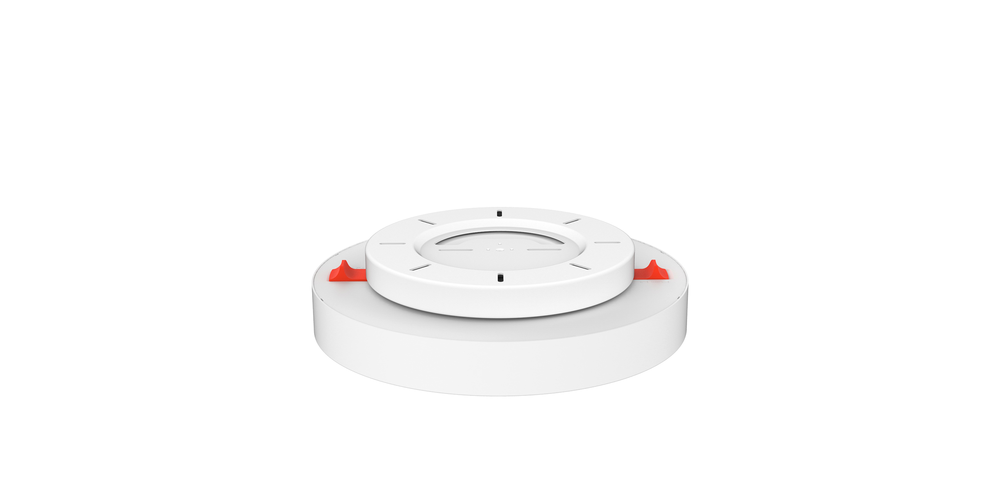
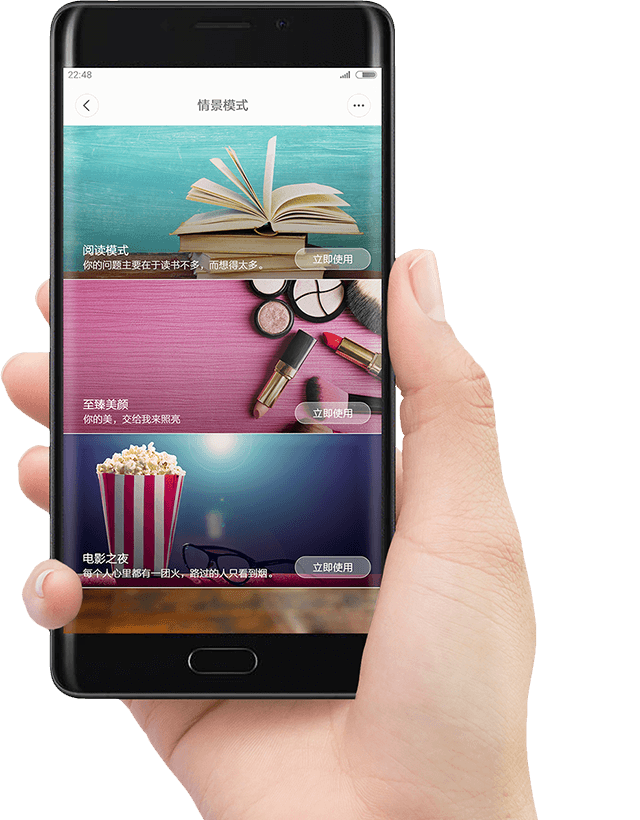
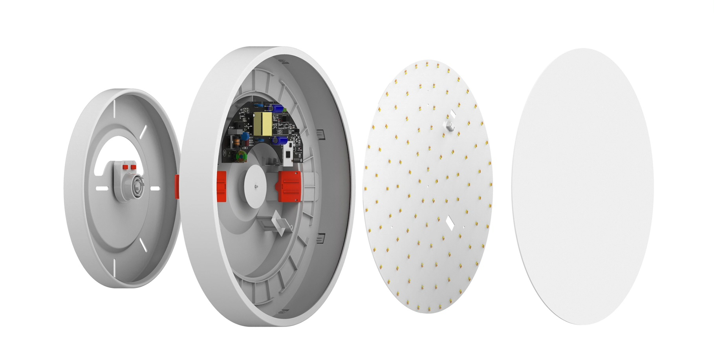
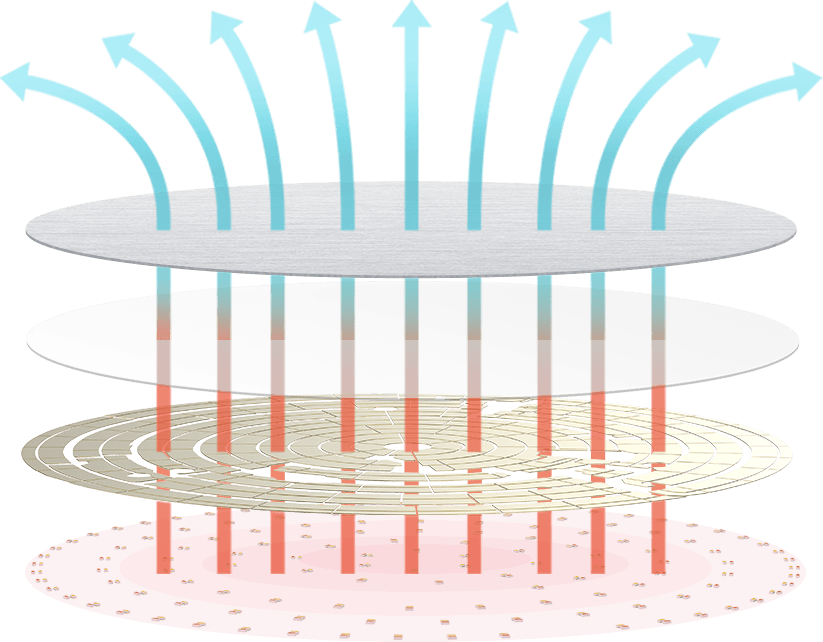
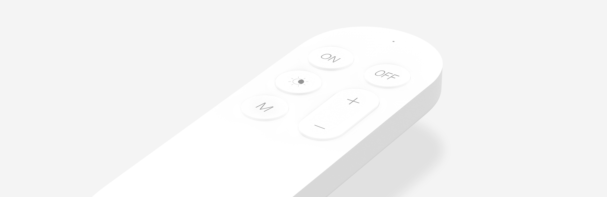
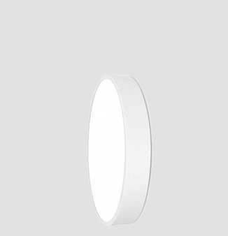
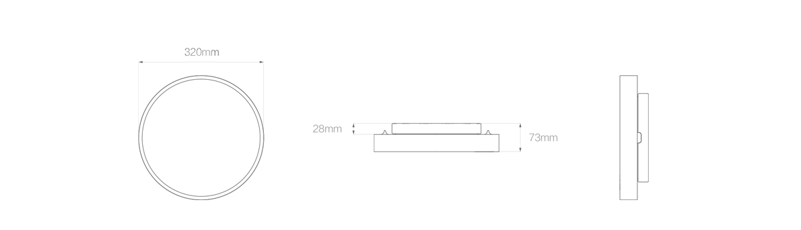
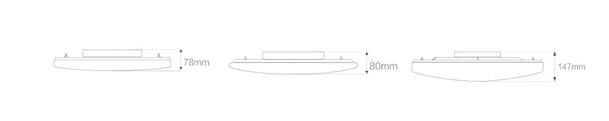

<div class="row luna">
    <div class="col-md-10 col-md-offset-1 col-lg-8 col-lg-offset-2 content">
        <section class="row luna_content_1">
            <div class="col-xs-12 col-sm-12 col-md-6 col-md-offset-6 col-lg-6 col-lg-offset-6">
                <div class="text">
                    <h1>Yeelight LED Ceiling Light</h1>
                    <h2>Потолочный светильник о котором вы мечтали</h2>
                    <p>Пятиминутная установка | Уютный домашний свет | Защита от пыли IP60 | Поддержка IFTTT
                    </p>
                </div>
            </div>
        </section>
        <section class="row luna_content_2">
            <div class="col-xs-12 col-sm-12 col-md-12 col-lg-12">
                
            </div>
        </section>
        <section class="row luna_content_3">
            <div class="col-xs-6 col-sm-6 col-md-3 col-lg-3">
                
                <p>Wi-Fi управление</p>
            </div>
            <div class="col-xs-6 col-sm-6 col-md-3 col-lg-3">
                
                <p>Cистема умный дом</p>
            </div>
            <div class="col-xs-6 col-sm-6 col-md-3 col-lg-3">
                
                <p>Работа с IFTTT</p>
            </div>
            <div class="col-xs-6 col-sm-6 col-md-3 col-lg-3">
                
                <p>Открытое API</p>
            </div>
        </section>
        <section class="row luna_content_4">
            <div class="col-xs-12 col-sm-12 col-md-12 col-lg-12 align-center">
                <div class="text">
                    <h2>Больше чем освещение — приятное и умное освещение</h2>
                    <p>Вечером светодиодная лампа YEELIGHT будет сопровождать вас во время чтения книги. Это поможет вам расслабиться
                        перед сном, а также создать более спокойную атмосферу. Мы улучшили его, что позволило использовать
                        функции регулировки яркости и дистанционного управления.</p>
                </div>
                <ul class="function">
                    <li>
                        <span class="icon stepless"></span>
                        <p>Плавная регулировка</p>
                    </li>
                    <li>
                        <span class="icon led"></span>
                        <p>Диоды с передачей 95&nbsp;Ra</p>
                    </li>
                    <li>
                        <span class="icon moon"></span>
                        <p>Уютный лунный свет</p>
                    </li>
                    <li>
                        <span class="icon wifi"></span>
                        <p>Wi-Fi/Bluetooth управление</p>
                    </li>
                    <li>
                        <span class="icon dust"></span>
                        <p>IP60 защита от&nbsp;пыли</p>
                    </li>
                    <li>
                        <span class="icon home"></span>
                        <p>Площадь освещения 15&nbsp;m²</p>
                    </li>
                </ul>
            </div>
            
        </section>
        <section class="row luna_content_5">
            <div class="col-xs-12 col-sm-6 col-md-6 col-lg-6">
                <div class="text">
                    <h2>Эффект музейного освещения</h2>
                    <p>Светодиодный потолочный светильник оснащен 240 светодиодами OSRAM с индексом цветопередачи до 95Ra, что
                        обеспечивает эффект освещения музея.</p>
                </div>
            </div>
            <div class="col-xs-12 col-sm-6 col-md-6 col-lg-6 align-center">
                
            </div>
        </section>
        <section class="row luna_content_6">
            <div class="col-xs-12 col-sm-12 col-md-8 col-md-offset-2 col-lg-8 col-lg-offset-2 align-center">
                <div class="text">
                    <h2>Уютный лунный свет</h2>
                    <p>Режим Moonlight придает лампе внешний вид завораживающей луны. Благодаря регулировке яркости до 0,1 люмена,
                        светильник Yeelight смягчает блики и снимает зрительное напряжение, позволяя вам комфортно засыпать
                        и просыпаться.</p>
                </div>
            </div>
        </section>
        <section class="row luna_content_7">
            <div class="col-xs-12 col-sm-12 col-md-10 col-md-offset-1 col-lg-10 col-lg-offset-1 align-center">
                <div class="text">
                    <h2>Простая пятиминутная установка</h2>
                    <p>Со специально разработанным модулем быстрой установки, снимать лампу для чистки стало так просто. Сдвиньте
                        защелки и лампа у вас в руках, мягко подтолкните и светильник снова на месте. Больше не нужно беспокоиться
                        об установке. С нашим фиксатором это стало так просто, легко и удобно.</p>
                </div>
                <video id="fast-install" src="../img/fast-install.mp4" poster="../img/luna_video_prew.jpg" data-condition="0">
                    
                </video>
            </div>
        </section>
        <section class="row luna_content_8">
            <div class="col-xs-12 col-sm-8 col-md-8 col-lg-6">
                <div class="text">
                    <h2>Синхронизация с браслетом Mi Band</h2>
                    <p>Используя приложения MI APP или YEELIGHT APP, свяжите ваш Mi Band со светильником. Теперь нет необходимости
                        прерывать сон, как только вы заснете, ваш свет автоматически выключится.</p>
                </div>
            </div>
        </section>
        <section class="row luna_content_9">
            <div class="col-xs-12 col-sm-12 col-md-10 col-md-offset-1 col-lg-8 col-lg-offset-2 align-center">
                <div class="text">
                    <h2>Сценарии освещения в ваших руках</h2>
                    <p>С помощью приложения вы можете использовать смартфон для смены режима освещения. Доступно множество встроенных
                        сюжетных режимов: ночной, красочный, кино, режим чтения и другие. В приложении легко настроить режим
                        помощи засыпания и пробуждения. Доступны также настраиваемые интеллектуальные сцены. Хороший свет
                        — умный свет.</p>
                </div>
                
            </div>
        </section>
        <section class="row luna_content_10">
            <div class="col-xs-12 col-sm-12 col-md-10 col-md-offset-1 col-lg-8 col-lg-offset-2 align-center">
                <div class="text">
                    <h2>Ресурс работы более 25 000 часов</h2>
                    <p>Светильник выполнен из качественных пластмассовых материалов, меди и алюминия, что гарантирует общую
                        безопасность устройства. Yeelight состоит из около 450 компонентов, которые прошли 96 процессов от
                        выбора материала до производства, прежде чем стать одним светильником.</p>
                </div>
                <video id="luna-parts" src="../img/luna_parts.mp4" poster="../img/luna_parts_prew.jpg" data-condition="0">
                    
                </video>
            </div>
        </section>
        <section class="row luna_content_11">
            <div class="col-xs-12 col-sm-8 col-md-8 col-lg-6">
                <div class="text">
                    <h2>Защита от пыли стандарта IP60</h2>
                    <p>Попрощайтесь с пылью и летающими насекомыми. Благодаря конструкции пылезащитного уплотнения мы решили
                        проблему попадания летающих насекомых и накопления пыли в абажуре. Мы сделали все, чтобы вы больше
                        не думали о таких мелочах.</p>
                </div>
            </div>
        </section>
        <section class="row luna_content_12">
            <div class="col-xs-12 col-sm-12 col-md-10 col-md-offset-1 col-lg-10 col-lg-offset-1 align-center">
                <div class="text">
                    <h2>Эффективное рассеивание тепла</h2>
                    <p>Правильный отвод тепла от светильника это залог его долговечной работы. Аллюминивая пластина и система
                        продуманных отверстий эффективно оводят и рассеивают тепло выделяемое при работе, обеспечивая эффективное
                        свечение и увеличивая срок службы светодиодов</p>
                </div>
                
            </div>
        </section>
        <section class="row luna_content_13">
            <div class="col-xs-12 col-sm-12 col-md-12 col-lg-10 col-lg-offset-1 align-center">
                <div class="text">
                    <h2>Удобный bluetooth пульт</h2>
                    <p>Двухчиповая трехполосная система затемнения предлагает диапазон цветовой температуры от 2700K до 6500K,
                        а диапазон яркости от 0.1lm до 1800lm. Регулировка яркости и цветовой температуры осуществляется
                        простым прикосновением к пульту дистанционного управления.</p>
                </div>
                <ul class="function">
                    <li>
                        <span class="icon on"></span>
                        <p>Включение</p>
                    </li>
                    <li>
                        <span class="icon off"></span>
                        <p>Выключение</p>
                    </li>
                    <li>
                        <span class="icon light"></span>
                        <p>Цветовая температура</p>
                    </li>
                    <li>
                        <span class="icon night"></span>
                        <p>Режим ночного освещения</p>
                    </li>
                    <li>
                        <span class="icon bright"></span>
                        <p>Регулировка яркости</p>
                    </li>
                </ul>
                
            </div>
        </section>
        <section class="row luna_content_17">
            <div class="col-xs-12 col-sm-12 col-md-10 col-md-offset-1 col-lg-10 col-lg-offset-1 align-center">
                <div class="text">
                    <h2>Создайте свое звездное небо</h2>
                    <p>Версия Starry Lampshade осветит ваш потолок подобно звездному небу. Плафон создан по методу выдувного
                        формования.</p>
                </div>
            </div>
        </section>
        <section class="row luna_content_16">
            <div class="col-xs-12 col-sm-8 col-md-6 col-md-offset-6 col-lg-6 col-lg-offset-6">
                <div class="text">
                    <h2>Озарите каждый уголок комнаты</h2>
                    <p>Совершенно новая конструкция плафона удовлетворит любые запросы к освещению. Хорошо пропускающий свет
                        акрил и изготовление поверхности по типу диапозитива позволили добиться мягкого, не режущего глаз
                        света.</p>
                </div>
            </div>
        </section>
        <section class="row luna_content_15">
            <div class="col-xs-12 col-sm-12 col-md-10 col-md-offset-1 col-lg-10 col-lg-offset-1 align-center">
                <div class="text">
                    <h2>Размеры для любых комнат</h2>
                    <p>Лампа выпускается в нескольких размерах, что позволяет выбрать именно ту, которая наиболее эффективно
                        сможет освещать ваше помещение</p>
                </div>
                <div class="row align-center">
                    <div class="col-xs-12 col-sm-12 col-md-4 col-lg-4">
                        
                        <h3>320×73mm / 32Вт</h3>
                        <p>Для небольших гостинных и спален до&nbsp;20m²</p>
                    </div>
                    <div class="col-xs-12 col-sm-12 col-md-4 col-lg-4">
                        
                        <h3>480×80mm / 32Вт</h3>
                        <p>Для небольших гостинных и спален до&nbsp;20m²</p>
                    </div>
                    <div class="col-xs-12 col-sm-12 col-md-4 col-lg-4">
                        
                        <h3>650×147mm / 50Вт</h3>
                        <p>Для средних гостинных и спален до&nbsp;25m²</p>
                    </div>
                </div>
            </div>
        </section>
        <section class="row luna_content_14">
            <div class="col-xs-12 col-sm-12 col-md-12 col-lg-12">
                
                
                <table class="table">
                    <thead>
                        <tr>
                            <th colspan="2">Характеристики</th>
                        </tr>
                    </thead>
                    <tbody>
                        <tr>
                            <td>Модель</td>
                            <td>YLXD01YL</td>
                        </tr>
                        <tr>
                            <td>Цвет</td>
                            <td>Белый</td>
                        </tr>
                        <tr>
                            <td>Размеры</td>
                            <td>320x320x73mm / 480x480x80mm / 650x650x147mm</td>
                        </tr>
                        <tr>
                            <td>Вес</td>
                            <td>1360g</td>
                        </tr>
                        <tr>
                            <td>Светвой поток</td>
                            <td>1800lm ±10% @4000k</td>
                        </tr>
                        <tr>
                            <td>Цветовая температура</td>
                            <td>2700K-6500K</td>
                        </tr>
                        <tr>
                            <td>CRI</td>
                            <td>>95</td>
                        </tr>
                        <tr>
                            <td>Соединение</td>
                            <td>Wi-Fi/Bluetooth</td>
                        </tr>
                        <tr>
                            <td>Площадь освещения</td>
                            <td>15m² / 20m² / 25m² </td>
                        </tr>
                        <tr>
                            <td>Мощность</td>
                            <td>28W</td>
                        </tr>
                        <tr>
                            <td>Питание</td>
                            <td>200V~50/60Hz 0.12A</td>
                        </tr>
                        <tr>
                            <td>Долговечность</td>
                            <td>25 000 часов</td>
                        </tr>
                        <tr>
                            <td>Платформы</td>
                            <td>Android 4.4 и выше / IOS 8.0 и выше</td>
                        </tr>
                    </tbody>
                </table>
            </div>
        </section>
    </div>
</div>